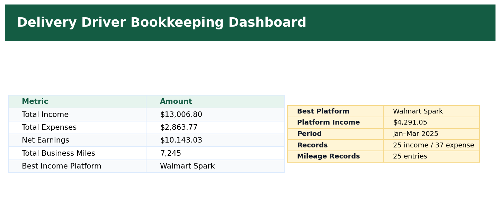

Purpose
Show the most important bookkeeping metrics in one place: total income, total expenses, net earnings, business miles, and best income platform.
Simple Example
A business owner can quickly see that the 3-month project produced $13,006.80 total income, $2,863.77 total expenses, $10,143.03 net earnings, and 7,245 business miles.
Simple Bookkeeping Decision Rule
Dashboard metrics should pull from summary sheets using formulas. This avoids manual mistakes and keeps the dashboard updated when source data changes.

Analysis
The dashboard summarizes the full 3-month project. The key numbers are $13,006.80 total income, $2,863.77 total expenses, $10,143.03 net earnings, and 7,245 total business miles. The best income platform is Walmart Spark with $4,291.05 in platform income.
The workbook dashboard uses formula-driven values from the Monthly Summary, Mileage Log, and Platform Summary sheets.
Total Income = Monthly Summary total income
Total Expenses = Monthly Summary total expenses
Net Earnings = Monthly Summary net earnings
Total Business Miles = SUM of Mileage Log business miles
Best Income Platform = Walmart Spark, based on the highest income in the Platform Summary.
Result
The dashboard gives a fast, professional view of income, expenses, mileage, and platform performance for bookkeeping review.